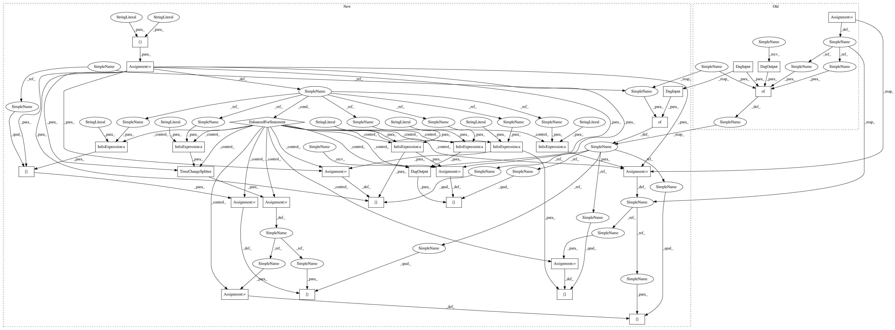

e61b7958e0576a723082f3dfa65cdb6ec3d53c0d,magenta/models/improv_rnn/improv_rnn_create_dataset.py,,get_pipeline,#Any#Any#,95
Before Change
A pipeline.Pipeline instance.
all_transpositions = config.transpose_to_key is None
quantizer = pipelines_common.Quantizer(steps_per_quarter=4)
lead_sheet_extractor_train = lead_sheet_pipelines.LeadSheetExtractor(
min_bars=7, max_steps=512, min_unique_pitches=3, gap_bars=1.0,
ignore_polyphonic_notes=False, all_transpositions=all_transpositions,
name="LeadSheetExtractorTrain")
lead_sheet_extractor_eval = lead_sheet_pipelines.LeadSheetExtractor(
min_bars=7, max_steps=512, min_unique_pitches=3, gap_bars=1.0,
ignore_polyphonic_notes=False, all_transpositions=all_transpositions,
name="LeadSheetExtractorEval")
encoder_pipeline_train = EncoderPipeline(config, name="EncoderPipelineTrain")
encoder_pipeline_eval = EncoderPipeline(config, name="EncoderPipelineEval")
partitioner = pipelines_common.RandomPartition(
music_pb2.NoteSequence,
["eval_lead_sheets", "training_lead_sheets"],
[eval_ratio])
dag = {quantizer: dag_pipeline.DagInput(music_pb2.NoteSequence),
partitioner: quantizer,
lead_sheet_extractor_train: partitioner["training_lead_sheets"],
lead_sheet_extractor_eval: partitioner["eval_lead_sheets"],
encoder_pipeline_train: lead_sheet_extractor_train,
encoder_pipeline_eval: lead_sheet_extractor_eval,
dag_pipeline.DagOutput("training_lead_sheets"): encoder_pipeline_train,
dag_pipeline.DagOutput("eval_lead_sheets"): encoder_pipeline_eval}
return dag_pipeline.DAGPipeline(dag)
def main(unused_argv):
After Change
A pipeline.Pipeline instance.
all_transpositions = config.transpose_to_key is None
partitioner = pipelines_common.RandomPartition(
music_pb2.NoteSequence,
["eval_lead_sheets", "training_lead_sheets"],
[eval_ratio])
dag = {partitioner: dag_pipeline.DagInput(music_pb2.NoteSequence)}
for mode in ["eval", "training"]:
time_change_splitter = pipelines_common.TimeChangeSplitter(
name="TimeChangeSplitter_" + mode)
quantizer = pipelines_common.Quantizer(
steps_per_quarter=4, name="Quantizer_" + mode)
lead_sheet_extractor = lead_sheet_pipelines.LeadSheetExtractor(
min_bars=7, max_steps=512, min_unique_pitches=3, gap_bars=1.0,
ignore_polyphonic_notes=False, all_transpositions=all_transpositions,
name="LeadSheetExtractor_" + mode)
encoder_pipeline = EncoderPipeline(config, name="EncoderPipeline_" + mode)
dag[time_change_splitter] = partitioner[mode + "_lead_sheets"]
dag[quantizer] = time_change_splitter
dag[lead_sheet_extractor] = quantizer
dag[encoder_pipeline] = lead_sheet_extractor
dag[dag_pipeline.DagOutput(mode + "_lead_sheets")] = encoder_pipeline
return dag_pipeline.DAGPipeline(dag)
def main(unused_argv):
In pattern: SUPERPATTERN
Frequency: 3
Non-data size: 30
Instances
Project Name: tensorflow/magenta
Commit Name: e61b7958e0576a723082f3dfa65cdb6ec3d53c0d
Time: 2017-01-25
Author: iansimon@users.noreply.github.com
File Name: magenta/models/improv_rnn/improv_rnn_create_dataset.py
Class Name:
Method Name: get_pipeline
Project Name: tensorflow/magenta
Commit Name: e61b7958e0576a723082f3dfa65cdb6ec3d53c0d
Time: 2017-01-25
Author: iansimon@users.noreply.github.com
File Name: magenta/models/drums_rnn/drums_rnn_create_dataset.py
Class Name:
Method Name: get_pipeline
Project Name: tensorflow/magenta
Commit Name: e61b7958e0576a723082f3dfa65cdb6ec3d53c0d
Time: 2017-01-25
Author: iansimon@users.noreply.github.com
File Name: magenta/models/melody_rnn/melody_rnn_create_dataset.py
Class Name:
Method Name: get_pipeline
Project Name: tensorflow/magenta
Commit Name: e61b7958e0576a723082f3dfa65cdb6ec3d53c0d
Time: 2017-01-25
Author: iansimon@users.noreply.github.com
File Name: magenta/models/improv_rnn/improv_rnn_create_dataset.py
Class Name:
Method Name: get_pipeline